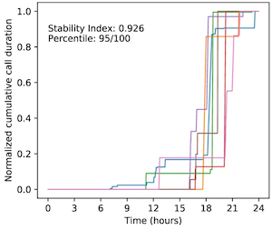

Tim Althoff

The goal of my research is to understand and empower people through data.
My research develops computational methods that leverage large-scale behavioral data to extract actionable insights about our lives, health and happiness through combining techniques from data science, social network analysis, and natural language processing.
I direct the Behavioral Data Science Group which works on research related to mental health, misinformation online, scientific reproducibility, and public health including informing the COVID-19 response.
We have a postdoc position available.
I am also looking for PhD students, especially in but not limited to deep learning, neural and graph representation learning, causal inference, data science and mobile health. If you're interested please apply to the UW Allen School.
Go Dawgs!
Selected highlights
2021

|
Mining Collective Data Science Knowledge from Code on the Web to Suggest Alternative Data Analysis Approaches
Mike Merill, Ge Zhang, Tim Althoff KDD 2021 |

|
Political Bias and Factualness in News Sharing across more than 100,000 Online Communities
Galen Weld, Maria Glenski, Tim Althoff ICWSM 2021 Best Paper Award (Outstanding Analysis Paper) pdf dataset |

|
The Effect of Moderation on Online Mental Health Conversations
David Wadden, Tal August, Qisheng Li, Tim Althoff ICWSM 2021 Best Paper Award (Outstanding Study Design) |

|
Towards Facilitating Empathic Conversations in Online Mental Health Support: A Reinforcement Learning Approach
Ashish Sharma, Inna Lin, Adam Miner, David Atkins, Tim Althoff WWW/WebConf 2021 Best Paper Award (single award across all 1736 submissions) pdf project dataset code video |

|
Online Mobile App Usage as an Indicator of Sleep Behavior and Job Performance
Chunjong Park, Morelle Arian, Xin Liu, Leon Sasson, Jeffrey Khan, Shwetak Patel, Alex Mariakakis, Tim Althoff WWW/WebConf 2021 |

|
Daily, weekly, seasonal, and menstrual cycles in female mood, behavior, and vital signs
Emma Pierson, Tim Althoff, Daniel Thomas, Paula Hillard, Jure Leskovec Nature Human Behavior 2021 |

|
Population-Scale Study of Human Needs During the COVID-19 Pandemic: Analysis and Implications
Jina Suh, Eric Horvitz, Ryen White, Tim Althoff WSDM 2021 pdf video poster |

|
Characterizing COVID-19 and Influenza Illnesses in the Real World via Person-Generated Health Data
Nikki Marinsek, Allison Shapiro, Ieuan Clay, Ben Bradshaw, Ernesto Ramirez, Jae Min, Andrew Trister, Yuedong Wang, Tim Althoff, Luca Foschini Cell Patterns 2021 |

|
Efficient and Explainable Risk Assessments for Imminent Dementia: Insights from an Aging Cohort Study
Nicasia Beebe-Wang*, Alexandra Okeson*, Tim Althoff§, Su-In Lee§ (*§ equal contribution) IEEE Journal of Biomedical and Health Informatics 2021 |

|
Leveraging Community and Author Context to Explain the Performance and Bias of Text-Based Deception Detection Models
Galen Weld, Ellyn Ayton, Tim Althoff, Maria Glenski NAACL Workshop on NLP for Internet Freedom: Censorship, Disinformation, and Propaganda 2021 Best Paper Award |

|
Estimating the Burden of Influenza on Daily Activity at Population Scale Using Commercial Wearable Sensors
Aziz Mezlini, Allison Shapiro, Eric J. Daza, Eamon Caddigan, Ernesto Ramirez, Tim Althoff, Luca Foschini medRxiv 2021 |
2020
|

|
Assessing the relationship between routine and schizophrenia symptoms with passively sensed measures of behavioral stability
Joy He-Yueya, Benjamin Buck, Andrew Campbell, Tanzeem Choudhury, John M Kane, Dror Ben-Zeev, Tim Althoff NPJ Schizophrenia 2020 |

|
A Computational Approach to Understanding Empathy Expressed in Text-Based Mental Health Support
Ashish Sharma, Adam Miner, David Atkins, Tim Althoff EMNLP 2020 pdf project dataset code |

|
Boba: Authoring and Visualizing Multiverse Analyses
Yang Liu, Alex Kale, Tim Althoff, Jeff Heer VAST 2020 |

|
Data-Driven Implications for Translating Evidence-Based Psychotherapies into Technology-Delivered Interventions
Jessica Schroeder, Jina Suh, Chelsey Wilks, Mary Czerwinski, Sean Munson, James Fogarty, Tim Althoff EAI PervasiveHealth 2020 |

|
Engagement Patterns of Peer-to-Peer Interactions on Mental Health Platforms: A Case-Study of TalkLife
Ashish Sharma, Monojit Choudhury, Tim Althoff, Amit Sharma ICWSM 2020 |

|
Paths Explored, Paths Omitted, Paths Obscured: Decision Points & Selective Reporting in End- to-End Data Analysis
Yang Liu, Tim Althoff, Jeff Heer CHI 2020 |
2019

|
Passively-sensed Behavioral Correlates of Discrimination Events in College Students
Yasaman S. Sefidgar, Woosuk Seo, Kevin S. Kuehn, Tim Althoff,, Anne Browning, Eve Riskin, Paula S. Nurius, Anind K. Dey, Jennifer Mankoff IMWUT/UbiComp 2019 |

|
Leveraging Routine Behavior and Contextually-Filtered Features for Depression Detection among College Students
Xuhai Xu, Prerna Chikersal, Afsaneh Doryab, Daniella Villalba, Janine M. Dutcher, Michael J. Tumminia, Tim Althoff, Sheldon Cohen, Kasey Creswell, David Creswell, Jennifer Mankoff, Anind K. Dey IMWUT/UbiComp 2019 |

|
Goal-setting And Achievement In Activity Tracking Apps: A Case Study Of MyFitnessPal
Mitchell Gordon, Tim Althoff, Jure Leskovec WWW 2019 |

|
Best Practices for Analyzing Large-scale Health Data from Wearables and Smartphone Apps
Jennifer L. Hicks, Tim Althoff, Rok Sosic, Peter Kuhar, Bojan Bostjancic, Abby C. King, Jure Leskovec, Scott L. Delp NPJ Digital Medicine (2) 2019 |
2018

|
Learning Individualized Cardiovascular Responses from Large-scale Wearable Sensors Data
Haraldur T. Hallgrímsson, Filip Jankovic, Tim Althoff, Luca Foschini NIPS ML4H 2018 |

|
Data Science for Human Well-being
Tim Althoff Ph.D. Thesis, Stanford University SIGKDD Dissertation Award 2019 thesis defense |

|
Modeling Interdependent and Periodic Real-World Action Sequences
Takeshi Kurashima, Tim Althoff, Jure Leskovec WWW 2018 |

|
I’ll Be Back: On the Multiple Lives of Users of a Mobile Activity Tracking Application
Zhiyuan Lin, Tim Althoff, Jure Leskovec WWW 2018 |

|
Modeling Individual Cyclic Variation in Human Behavior
Emma Pierson, Tim Althoff, Jure Leskovec WWW 2018 |

|
Psychomotor function measured via online activity predicts motor vehicle fatality risk
Tim Althoff, Eric Horvitz, Ryen W. White NPJ Digital Medicine (1) 2018 pdf suppl. inf. method details |
2017

|
Large-scale physical activity data reveal worldwide activity inequality
Tim Althoff, Rok Sosic, Jennifer L. Hicks, Abby C. King, Scott L. Delp, Jure Leskovec Nature (547.7663) 2017 pdf suppl. inf. Nature project press releases dataset |

|

|
Harnessing the Web for Population-Scale Physiological Sensing: A Case Study of Sleep and Performance
Tim Althoff, Eric Horvitz, Ryen W. White, Jamie Zeitzer WWW 2017 pdf appendix slides |

|
How Gamification Affects Physical Activity: Large-scale Analysis of Walking Challenges in a Mobile Application
Ali Shameli, Tim Althoff, Amin Saberi, Jure Leskovec WWW 2017 pdf slides |

|
Online Actions with Offline Impact: How Online Social Networks Influence Online and Offline User Behavior
Tim Althoff, Pranav Jindal, Jure Leskovec WSDM 2017 pdf slides |
2016
|
|
Large-scale Analysis of Counseling Conversations: An Application of Natural Language Processing to Mental Health
Tim Althoff*, Kevin Clark*, Jure Leskovec (* equal contribution) TACL 2016 IMIA Best Paper Award 2016 pdf slides project dataset |

|
Influence of Pokémon Go on Physical Activity: Study and Implications
Tim Althoff, Ryen White, Eric Horvitz JMIR 12/06/2016 (#1 most tweeted JMIR article 2016; #5 most tweeted JMIR article all time) arXiv 10/06/2016 pdf arXiv |

|
Quantifying Dose Response Relationships Between Physical Activity and Health Using Propensity Scores
Tim Althoff, Rok Sosic, Jennifer L. Hicks, Abby C. King, Scott L. Delp, Jure Leskovec NIPS Workshop on Machine Learning for Health 2016 workshop |
2015

|
TimeMachine: Timeline Generation for Knowledge-Base Entities
Tim Althoff, Xin Luna Dong, Kevin Murphy, Safa Alai, Van Dang, Wei Zhang KDD 2015 pdf full version slides poster demo |

|
Donor Retention in Online Crowdfunding Communities: A Case Study of DonorsChoose.org
Tim Althoff, Jure Leskovec WWW 2015 pdf slides |
2014

|
How to Ask for a Favor: A Case Study on the Success of Altruistic Requests
Tim Althoff, Cristian Danescu-Niculescu-Mizil, Dan Jurafsky ICWSM 2014 pdf slides dataset |
2013

|
Analysis and Forecasting of Trending Topics in Online Media Streams
Tim Althoff, Damian Borth, Jörn Hees, Andreas Dengel ACM Multimedia 2013 pdf slides |

|
Analysis and Forecasting of Trending Topics in Online Media
Tim Althoff Master's Thesis, University of Kaiserslautern, Germany April 2013 pdf slides |
2012

|
Detection Bank: An Object Detection Based Video Representation for Multimedia Event Recognition
Tim Althoff, Hyun Oh Song, Trevor Darrell ACM Multimedia 2012 pdf poster |

|
Sparselet Models for Efficient Multiclass Object Detection
Hyun Oh Song, Stefan Zickler, Tim Althoff, Ross Girshick, Mario Fritz, Christopher Geyer, Pedro Felzenszwalb, Trevor Darrell ECCV 2012 pdf project demo video |

|
Don't Look Back: Post-hoc Category Detection via Sparse Reconstruction
Hyun Oh Song, Mario Fritz, Tim Althoff, Trevor Darrell UC Berkeley, Tech. Rep. UCB/EECS-2012-16 Jan. 2012 pdf archive |
2011

|
Balanced Clustering for Content-based Image Browsing
Tim Althoff, Adrian Ulges, Andreas Dengel German Computer Science Society, Informatiktage March 2011 pdf project demo |
2010

|
Scalable Clustering for Hierarchical Content-based Browsing of Large-scale Image Collections
Tim Althoff Bachelor's Thesis, University of Kaiserslautern, Germany September 2010 |


Assistant Professor
Computer Science
University of Washington
Gates Center #313
3800 E Stevens Way NE
Box 352355
Seattle, WA 98195
Follow @timalthoff
CV
Google Scholar
linkedin